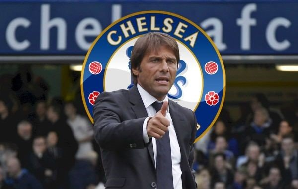

"실수에 대해 이야기 하고 싶지않다. 선수에 대한 예의가 아니다. 이겨도 팀으로서 이기고, 져도 팀으로서 진다."

안토니오 콘테
(Antonio Conte)
출생 : 1969년 7월 31일, 이탈리아
선수 : US레체 (1985 ~ 1991)
유벤투스 FC (1991 ~ 2004)
감독 : AC아레초 (2006 ~ 2007)
FC 바리 (2007 ~ 2009)
아탈란타 BC (2009 ~ 2010)
AC시에나 (2010 ~ 2011)
유벤투스 FC (2011 ~ 2014)
이탈리아 축구 국가대표 (2014 ~ 2016)
첼시 FC (2016 ~ 현재)
1) 절망적인 상황에 빠진 첼시 FC를 한 시즌만에 최강으로 올려놓은 구원자
2) 수비에 강점을 보인 기존의 첼시 스타일을 살리면서도 유벤투스의 짜임새를 이식한 감독
3) 입단 시즌에 EPL에 3백 열풍을 일으킨 감독